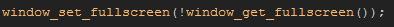

Tutorial
Page 2 of 15
Getting Started With Windows
To start this tutorial we are going to look at the Windows platform and test various methods for scaling your game to the users screen size (this will also be appropriate for use on Mac and Ubuntu platforms).
PC users usually have monitors in a landscape position, so this removes one major obstacle from our path to perfect scaling (mobile devices can be landscape OR portrait and change too, which complicates things),
but they can have a multitude of different resolutions, for example:
- XGA - has an aspect ratio of 4:3 and is 1024 px wide by 768 px tall
- "True" HD - has an aspect ratio of 16:9 and is 1920px wide by 900px tall
These different resolutions are what we will need to deal with when creating a game for desktop PCs, and as you can see from those two examples, the resolution can vary quite a lot between any given machine
and another. So, how do we deal with this? The important thing to note here is the aspect ratio. This is the key to all our resolution and scale problems, as it will be the amount that we use to multiply
(or divide) our game base width and height by to get the correct scaling.

However, before continuing with this, lets have a very quick look at the easiest way to maximise your game to the client PC's window using the GameMaker:Studio function
window_set_fullscreen(bool).
Easy Fullscreen
If you have a look at the game file that accompanies this tutorial, you will see that the very first room of the game has some text that says "Press 1 to toggle fullscreen", and if you have tested the game,
you'll have seen that it does nothing! So let's remedy this now by opening up the object "obj_Windows_Fullscreen" and adding a Key Pressed Event for the digit "1" with the following code:

This code will "toggle" between windowed and fullscreen modes. What happens in this code is that you are getting back the current state of the game windows as either a true or false value (for fullscreen or
windowed) and you are using it as the argument to set the game window, by negating that value with the "!" operator, which means "not". So if the window is fullscreen, you would be using "not fullscreen",
which is "!true", ie: false, as the argument. This is a very useful technique for switching between boolean values and can be used anywhere you need to set a variable to true or false and vice versa.
Test this now and you will see that when the game is in fullscreen mode, it is made to fit the screen resolution with black bars drawn to "crop" the game to fit correctly.
Click on the Next button to go to the next page of the tutorial.